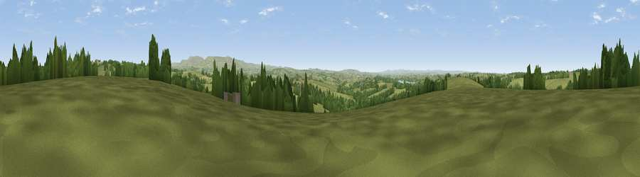

Viewpoint near Germansweek
#21733 in England · top 37% of its area beats it · near GermansweekThe view, rendered

A 360° render of this exact spot computed from the terrain model, tree cover and land cover — summer colours, afternoon light, calibrated against photographs of famous viewpoints. Real trees, hedges and buildings will differ in detail.
The panorama
Grey silhouette: terrain skyline in each direction (720 bearings, Earth curvature and refraction included). Dashed green: skyline with trees (+15 m) and buildings (+8 m) as obstacles. Blue strip: how far the ground is visible on each bearing.
Where the view opens
Wedge length = distance to the farthest visible ground on that bearing (vegetation-aware). Rings at 10, 25 and 50 km.
What fills the view
81% grassland · 16% woodland · 2% cropland ·
Angular shares of the visible panorama (visual magnitude), not map area. Landscape diversity 0.25 (0–1 Shannon).
Key numbers
More beautiful places nearby
The staircase of upgrades: each row has a higher view potential than everything closer. Driving times are estimates from straight-line distance, calibrated against real road routing — check an actual route before setting out.
| Place | Direction | Drive | Score |
|---|---|---|---|
| Viewpoint near Germansweek | WSW · 1 km | ~3 min | 52.5 |
| Viewpoint near Germansweek | WSW · 2 km | ~4 min | 53.6 |
| Viewpoint near Bratton Clovelly | ENE · 3 km | ~7 min | 60.9 |
| Sourton Tors | ESE · 9 km | ~18 min | 74.8 |
| Viewpoint near Sourton | ESE · 10 km | ~20 min | 75.7 |
| Great Links Tor | SE · 12 km | ~22 min | 77.8 |
| Yes Tor | ESE · 13 km | ~24 min | 78.5 |
| Kit Hill | SSW · 24 km | ~39 min | 80.3 |
50.72489, -4.18569 · source: screening · position refined by local search. Computed location — check access rights before visiting.